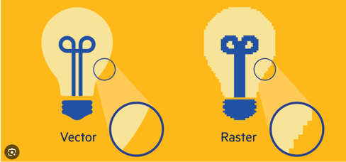

Canvas je HTML5 element koji, pomoću JavaScript-a, omogućava dinamičko
iscrtavanje različitih oblika, dodavanje slika, kreiranje animacija na web
stranici i sl.
Na platnu (canvas-u) to ne radimo korištenjem
novog jezika (kao što je to slučaj kod SVG) ili korištenjem Flasha.
Najčešće uporabe platna su:
SVG(Scalable Vector Graphics) grafika ne gubi kvalitetu
prilikom zumiranja ili resize-a.
Svi crteži mogu biti interaktivni i dinamički. Svaki element i atribut SVG
datoteke može biti animiran. Animacije mogu biti definirane i pokrenute
interaktivno ili pomoću skripti.
SVG integrira druge W3C standarde kao što su DOM, XSL …
| SVG | HTML Canvas |
| SVG ima bolju skalabilnost, tako damože imati bolje slike sa velikom kvalitetom na bilo kojoj rezoluciji | Canvas ima lošu skalabilnost. Nije prikladan za rad s velikim rezolucijama |
| SVG daje bolje performansesa manjim brojem objekata ili većom površinom | Canvas dajebolje performanseza rad sa manjim površinama ili većim brojevima objekata |
| SVG se može modificirati pomoću skripte ili CSS-a | Canvas se može modificirati samo uz pomoć skripte |
| SVG je baziran na vektorimai sastavljen je od oblika | Canvas je baziran na pixelima |
| Ime | Marko |
| Telefon | 555-1234 |
| 555-8745 |
